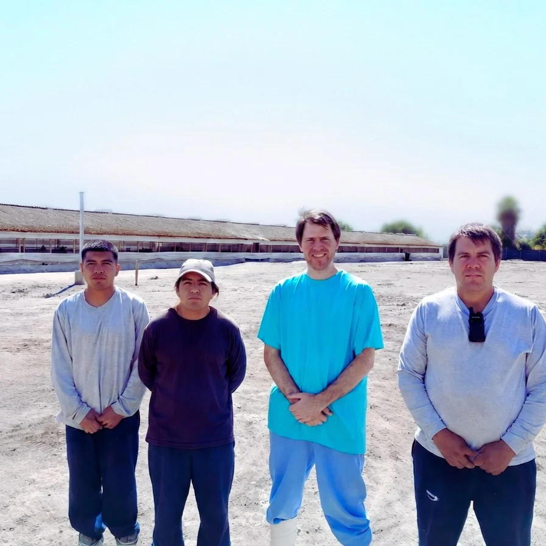
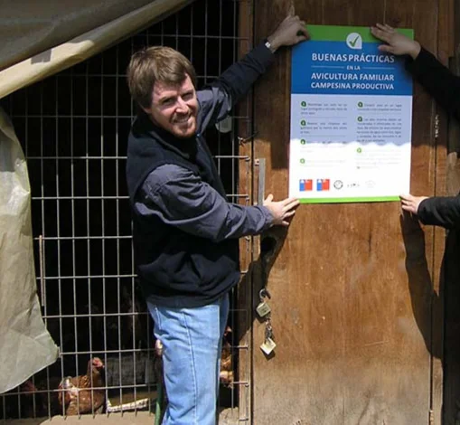
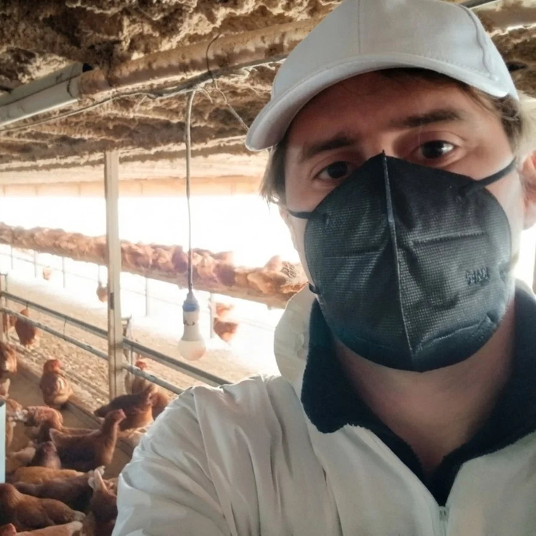
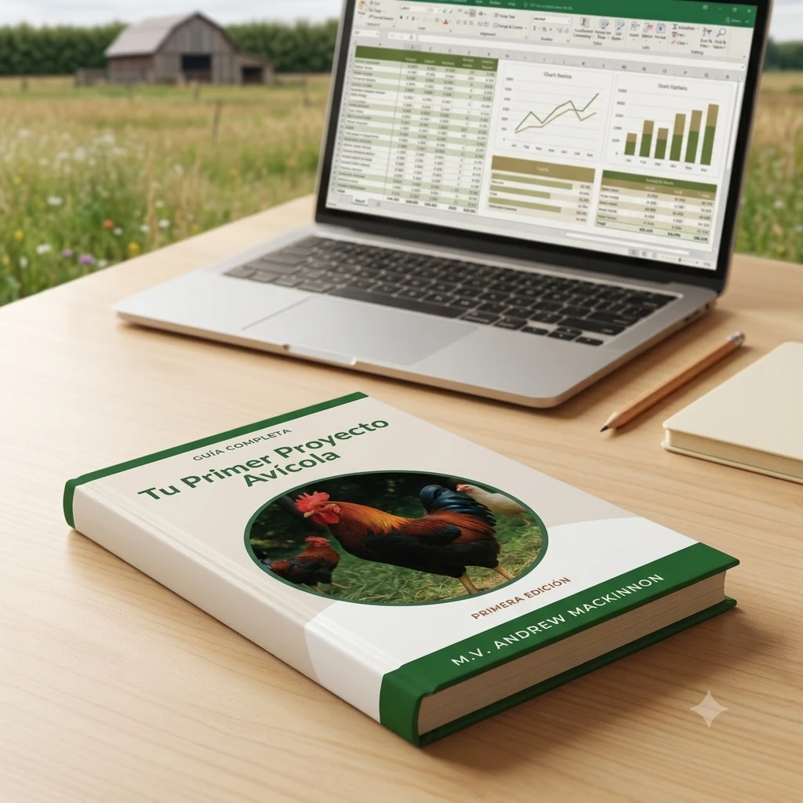
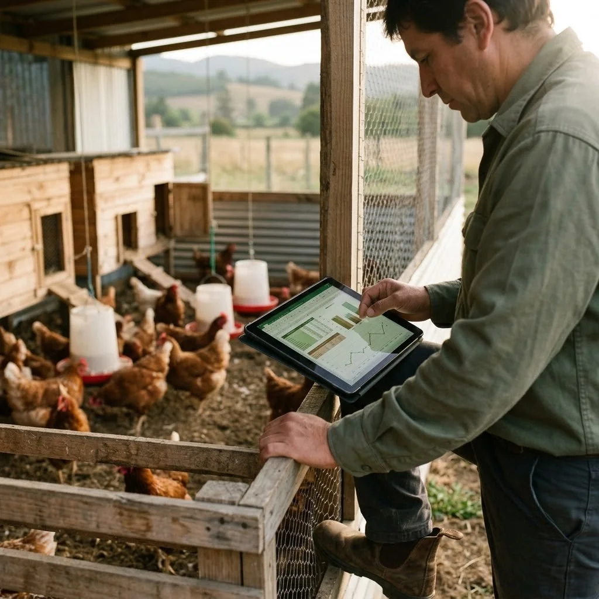
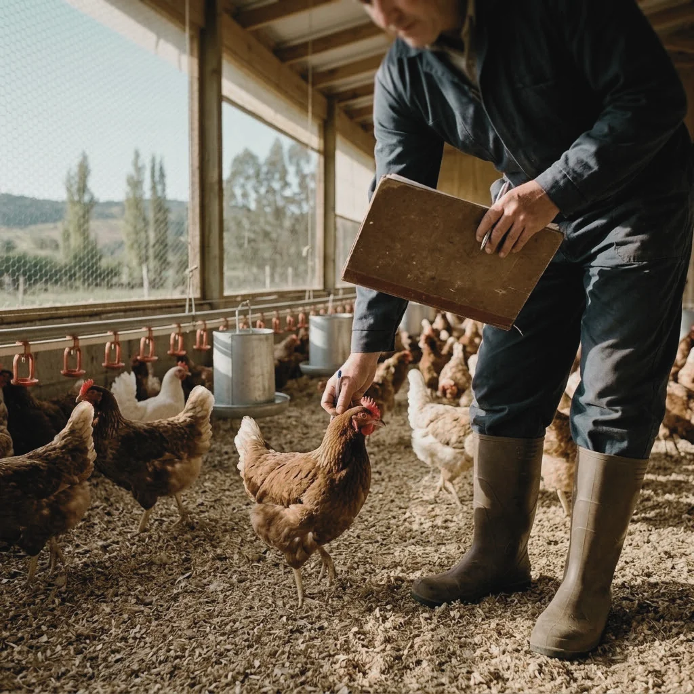
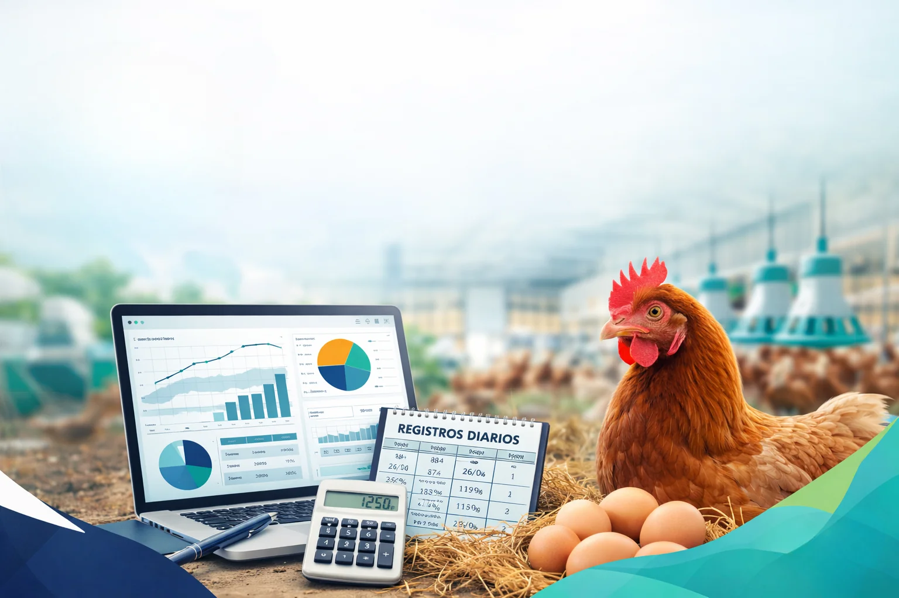

15 años
de experiencia en avicultura, trabajando en terreno con proyectos reales.
Libro, planilla de gestión y protocolo de contingencia para estructurar tu producción avícola desde el primer mes. Escrito por Andrew MacKinnon, Médico Veterinario.
La mayoría de los proyectos avícolas pequeños fallan por las mismas causas: no definir bien la escala del proyecto, no registrar datos desde el día uno, y no tener un protocolo cuando llega una crisis sanitaria.
Quiero el kit completo →
de experiencia en avicultura, trabajando en terreno con proyectos reales.

de docencia universitaria y técnica en producción animal.

especialista en Avicultura e Inocuidad y Calidad Agroalimentaria.

13 capítulos sobre manejo, alimentación, salud y gestión de un proyecto avícola pequeño — sin relleno genérico, escrito desde experiencia real de terreno.
Y más — el libro completo tiene 13 capítulos, 237 páginas.

Calcula automáticamente costo por unidad, conversión y rentabilidad con tus propios registros diarios — sin fórmulas complicadas.
Quiero el kit completo →
Guías rápidas y simples para gestionar tu día a día... Y también para saber qué hacer cuando ocurran problemas.
Quiero el kit completo →"La mayoría de la información técnica disponible está pensada para escala industrial, o para consumo familiar. Este kit es para quien quiere profesionalizar entre 500 y 2.000 aves."
— M.V. Andrew MacKinnon
Cada componente cubre una parte distinta del mismo problema: decidir, registrar, manejar y reaccionar con a tiempo, con conocimientos clave.
Base técnica y práctica de 237 páginas: manejo, criterios productivos y decisiones antes de invertir.
Costo por unidad, conversión y rentabilidad calculados automáticamente.
Checklists, calendario anual y tablas de referencia para el manejo diario.
Protocolos ante brotes, baja de postura, mortalidad y otras emergencias.
Artículo técnico sobre prevención y control de riesgo sanitario.
Planillas imprimibles de producción, mes a mes, listas para el galpón.
Acceso inmediato por descarga apenas se confirma tu pago.
Usa el libro, el Excel y la guía para decidir, registrar y gestionar con criterio.
Cuando llegue una crisis sanitaria o de manejo, el manual de contingencia te dice qué hacer.
Si el kit no es lo que esperabas, escríbeme dentro de los primeros 7 días y te devuelvo el 100% de tu dinero, sin preguntas.
Todo el contenido es digital: el libro, la guía y el manual en PDF, el Excel de gestión, el artículo de Salmonella y los registros diarios listos para imprimir. Se descarga desde tu computador o celular.
Apenas se confirma tu pago, la plataforma te envía por correo el enlace de descarga. El acceso es inmediato, sin tiempos de espera.
Tarjetas de crédito y débito, y otros medios habilitados según tu país, a través de la plataforma de pago segura Hotmart.
Tienes 7 días de garantía total desde la compra: si no es lo que esperabas, se devuelve el 100% de tu dinero, sin preguntas.
No. El kit está pensado tanto para quien parte de cero como para quien ya tiene aves y quiere ordenar su gestión y sus números.
El valor de 39 Soles es válido hasta el 31 de agosto. Después de esa fecha vuelve a su precio regular de 86.000 COP.
¿No estás seguro si es para ti? Escríbeme por WhatsApp →
Precio de lanzamiento válido hasta el 31 de agosto · garantía de devolución total, 7 días, sin preguntas.
Quiero el kit completo →Precio en Soles peruanos. Puedes cambiar de país en el proceso de pago si lo necesitas.
